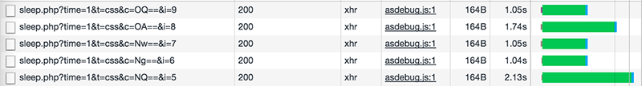
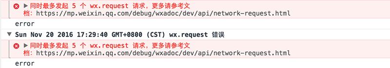
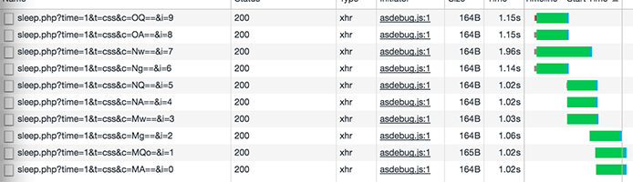
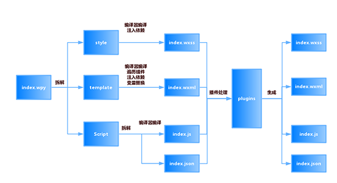
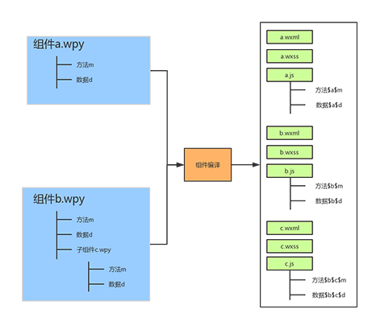
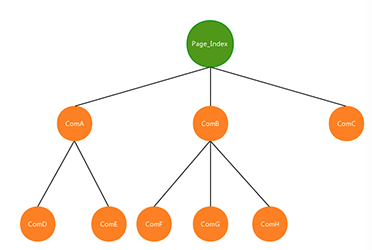
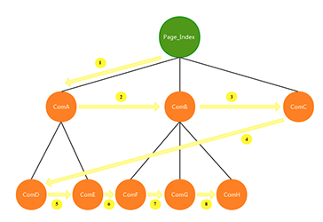
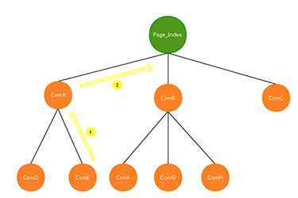
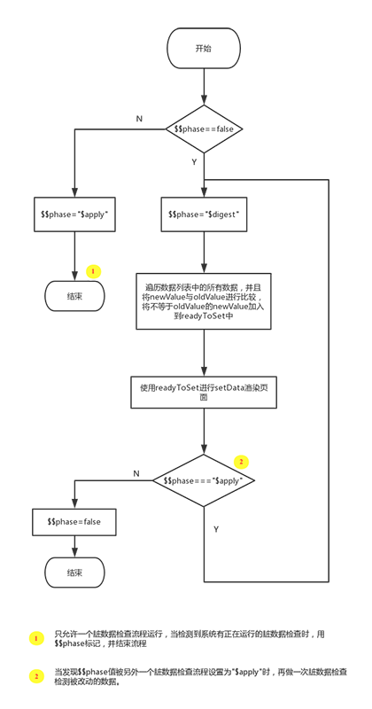

微信小程序组件化开发框架WePY官方文档
快速入门指南
WePY项目的创建与使用
WePY的安装或更新都通过npm进行。
全局安装或更新WePY命令行工具
npm install wepy-cli -g在开发目录中生成Demo开发项目
wepy new myproject切换至项目目录
cd myproject开启实时编译
wepy build --watchWePY项目的目录结构
├── dist 微信开发者工具指定的目录（该目录由WePY的build指令自动编译生成，请不要直接修改该目录下的文件）
├── node_modules
├── src 代码编写的目录（该目录为使用WePY后的开发目录）
| ├── components WePY组件目录（组件不属于完整页面，仅供完整页面或其他组件引用）
| | ├── com_a.wpy 可复用的WePY组件a
| | └── com_b.wpy 可复用的WePY组件b
| ├── pages WePY页面目录（属于完整页面）
| | ├── index.wpy index页面（经build后，会在dist目录下的pages目录生成index.js、index.json、index.wxml和index.wxss文件）
| | └── other.wpy other页面（经build后，会在dist目录下的pages目录生成other.js、other.json、other.wxml和other.wxss文件）
| └── app.wpy 小程序配置项（全局数据、样式、声明钩子等；经build后，会在dist目录下生成app.js、app.json和app.wxss文件）
└── package.json 项目的package配置参考建议
WePY借鉴了Vue.js（后文简称Vue）的语法风格和功能特性，如果你之前从未接触过Vue，建议先阅读Vue的官方文档，以熟悉相关概念，否则在阅读WePY文档以及使用WePY进行开发的过程中，将会遇到比较多的障碍。
开发建议使用第三方成熟IDE或编辑器(具体请参看后文的
代码高亮部分)，微信开发者工具仅用于实时预览和调试。
重要提醒
使用
微信开发者工具-->添加项目，项目目录请选择dist目录。微信开发者工具-->项目-->关闭ES6转ES5。 重要：漏掉此项会运行报错。微信开发者工具-->项目-->关闭上传代码时样式自动补全。 重要：某些情况下漏掉此项也会运行报错。微信开发者工具-->项目-->关闭代码压缩上传。 重要：开启后，会导致真机computed, props.sync 等等属性失效。（注：压缩功能可使用WePY提供的build指令代替，详见后文相关介绍以及Demo项目根目录中的wepy.config.js和package.json文件。）本地项目根目录运行
wepy build --watch，开启实时编译。（注：如果同时在微信开发者工具-->设置-->编辑器中勾选了文件保存时自动编译小程序，将可以实时预览，非常方便。）
代码高亮
文件后缀为.wpy，可共用Vue的高亮规则，但需要手动设置。下面提供一些常见IDE或编辑器中实现代码高亮的相关设置步骤以供参考(也可通过更改文件后缀名的方式来实现高亮，详见后文相关介绍)。
- Sublime
1. 打开Sublime->Preferences->Browse Packages..进入用户包文件夹。
2. 在此文件夹下打开cmd，运行git clone git@github.com:vuejs/vue-syntax-highlight.git，无GIT用户可以直接下载zip包解压至当前文件夹。
3. 关闭.wpy文件重新打开即可高亮。
- WebStorm/PhpStorm
1. 打开Settings，搜索Plugins，搜索Vue.js插件并安装。
2. 打开Settings，搜索File Types，找到Vue.js Template，在Registered Patterns添加*.wpy，即可高亮。
- Atom
1. 在Atom里先安装Vue的语法高亮 - language-vue，如果装过了就忽略这一步。
2. 打开Atom -> Config菜单。在core键下添加：
customFileTypes:
"text.html.vue": [
"wpy"
]- VS Code
1. 在 Code 里先安装 Vue 的语法高亮插件 Vetur。
2. 打开任意 .wpy 文件。
3. 点击右下角的选择语言模式，默认为纯文本。
4. 在弹出的窗口中选择 .wpy 的配置文件关联...。
5. 在选择要与 .wpy 关联的语言模式 中选择 Vue。
- VIM
1. 安装 Vue 的 VIM 高亮插件，例如 posva/vim-vue。
2. 配置 .wpy 后缀名的文件使用 Vue 语法高亮。
au BufRead,BufNewFile *.wpy setlocal filetype=vue.html.javascript.css代码规范
变量与方法尽量使用驼峰式命名，并且注意避免使用
$开头。 以$开头的标识符为WePY框架的内建属性和方法，可在JavaScript脚本中以this.的方式直接使用，具体请参考API文档。小程序入口、页面、组件文件名的后缀为
.wpy；外链的文件可以是其它后缀。 具体请参考wpy文件说明。使用ES6语法开发。 框架在ES6(ECMAScript 6)下开发，因此也需要使用ES6开发小程序，ES6中有大量的语法糖可以让我们的代码更加简洁高效。
使用Promise。 框架默认对小程序提供的API全都进行了 Promise 处理，甚至可以直接使用
async/await等新特性进行开发。事件绑定语法使用优化语法代替。 原
bindtap="click"替换为@tap="click"，原catchtap="click"替换为@tap.stop="click"。更多@符用法，参见组件自定义事件。事件传参使用优化后语法代替。 原
bindtap="click" data-index={{index}}替换为@tap="click({{index}})"。自定义组件命名应避开微信原生组件名称以及功能标签
<repeat>。 不可以使用input、button、view、repeat等微信小程序原生组件名称命名自定义组件；另外也不要使用WePY框架定义的辅助标签repeat命名。有关repeat的详细信息，请参见循环列表组件引用。
主要功能特性
开发模式转换
WePY框架在开发过程中参考了Vue等现有框架的一些语法风格和功能特性，对原生小程序的开发模式进行了再次封装，更贴近于MVVM架构模式。以下是使用WePY前后的代码对比。
原生代码：
//index.js
//获取应用实例
var app = getApp()
//通过Page构造函数创建页面逻辑
Page({
//可用于页面模板绑定的数据
data: {
motto: 'Hello World',
userInfo: {}
},
//事件处理函数
bindViewTap: function() {
console.log('button clicked')
},
//页面的生命周期函数
onLoad: function () {
console.log('onLoad')
}
})基于WePY的代码：
//index.wpy中的<script>部分
import wepy from 'wepy';
//通过继承自wepy.page的类创建页面逻辑
export default class Index extends wepy.page {
//可用于页面模板绑定的数据
data = {
motto: 'Hello World',
userInfo: {}
};
//事件处理函数(集中保存在methods对象中)
methods = {
bindViewTap () {
console.log('button clicked');
}
};
//页面的生命周期函数
onLoad() {
console.log('onLoad');
};
}支持组件化开发
参见章节：组件
示例代码：
// index.wpy
<template>
<view>
<panel>
<h1 slot="title"></h1>
</panel>
<counter1 :num="myNum"></counter1>
<counter2 :num.sync="syncNum"></counter2>
<list :item="items"></list>
</view>
</template>
<script>
import wepy from 'wepy';
//引入List、Panel和Counter组件
import List from '../components/list';
import Panel from '../components/panel';
import Counter from '../components/counter';
export default class Index extends wepy.page {
//页面配置
config = {
"navigationBarTitleText": "test"
};
//声明页面中将要使用到的组件
components = {
panel: Panel,
counter1: Counter,
counter2: Counter,
list: List
};
//可用于页面模板中绑定的数据
data = {
myNum: 50,
syncNum: 100,
items: [1, 2, 3, 4]
}
}
</script>支持加载外部NPM包
在编译过程当中，会递归遍历代码中的require然后将对应依赖文件从node_modules当中拷贝出来，并且修改require为相对路径，从而实现对外部NPM包的支持。如下图：

单文件模式，目录结构更清晰，开发更方便
原生小程序要求app实例必须有3个文件：app.js、app.json、app.wxss，而page页面则一般有4个文件：page.js、page.json、page.wxml、page.wxss，并且还要求app实例的3个文件以及page页面的4个文件除后缀名外必须同名，具体可参看官方目录结构。
而在WePY中则使用了单文件模式，将原生小程序app实例的3个文件统一为app.wpy，page页面的4个文件统一为page.wpy。使用WePY开发前后的开发目录结构对比如下：
原生小程序的目录结构：
project
├── pages
| ├── index
| | ├── index.js index 页面逻辑
| | ├── index.json index 页面配置
| | ├── index.wxml index 页面结构
| | └── index.wxss index 页面样式
| └── log
| ├── log.js log 页面逻辑
| ├── log.json log 页面配置
| ├── log.wxml log 页面结构
| └── log.wxss log 页面样式
├── app.js 小程序逻辑
├── app.json 小程序公共配置
└── app.wxss 小程序公共样式使用WePY框架后的开发目录结构(主要为src目录的结构，dist目录除外)：
注：dist目录为WePY通过build指令生成的目录，除额外增加的npm目录外，其目录结构与原生小程序的目录结构类似。project
└── src
├── pages
| ├── index.wpy index 页面逻辑、配置、结构、样式
| └── log.wpy log 页面逻辑、配置、结构、样式
└──app.wpy 小程序逻辑、公共配置、公共样式默认使用babel编译，支持ES6/7的一些新特性
用户可以通过修改wepy.config.js(老版本使用.wepyrc)配置文件，配置自己熟悉的babel环境进行开发。默认开启使用了一些新的特性如promise、async/await（自WePY 1.4.1开始必须手动开启，原因参见前文代码规范一节中的介绍）等等。
示例代码：
import wepy from 'wepy';
export default class Index extends wepy.page {
getData() {
return new Promise((resolve, reject) => {
setTimeout(() => {
resolve({data: 123});
}, 3000);
});
};
async onLoad() {
let data = await this.getData();
console.log(data.data);
};
}针对原生API进行优化
对小程序原生API进行promise处理，同时修复了一些原生API的缺陷，比如：wx.request的并发问题等。
原生代码：
onLoad = function () {
var self = this;
wx.login({
success: function (data) {
wx.getUserInfo({
success: function (userinfo) {
self.setData({userInfo: userinfo});
}
});
}
});
}基于WePY的代码：
import wepy from 'wepy';
async onLoad() {
await wepy.login();
this.userInfo = await wepy.getUserInfo();
}在同时并发10个request请求测试时：
不使用WePY:
 
使用WePY后：

进阶介绍
wepy.config.js配置文件说明
执行wepy new demo后，会生成类似下面这样的配置文件。
let prod = process.env.NODE_ENV === 'production';
module.exports = {
'output': 'dist',
'source': 'src',
'wpyExt': '.wpy',
'compilers': {
less: {
'compress': true
},
/*sass: {
'outputStyle': 'compressed'
},*/
babel: {
'presets': [
'es2015',
'stage-1'
],
'plugins': [
'transform-export-extensions',
'syntax-export-extensions',
'transform-runtime'
]
}
},
'plugins': {
}
};
if (prod) {
// 压缩sass
module.exports.compilers['sass'] = {'outputStyle': 'compressed'};
// 压缩less
module.exports.compilers['less'] = {'compress': true};
// 压缩js
module.exports.plugins = {
'uglifyjs': {
filter: /\.js$/,
config: {
}
},
'imagemin': {
filter: /\.(jpg|png|jpeg)$/,
config: {
'jpg': {
quality: 80
},
'png': {
quality: 80
}
}
}
};
}wpyExt： 缺省值为'.wpy'，IDE默认情况下不会对此文件类型进行高亮处理，这种情况下，除了按照前文代码高亮部分的介绍进行设置之外，还可以直接将相关文件的后缀名由.wpy修改为.vue(因为与Vue的高亮规则一样)，然后将此选项修改为.vue，也能解决部分IDE中代码高亮的问题。
compilers： compilers为1.3.1版本之后的功能，如果需要使用其它语法，请先配置compilers，然后再安装相应的compilers。目前支持wepy-compiler-less，wepy-compiler-sass、wepy-compiler-babel、wepy-compiler-pug，其他compiler持续开发中......
对应各compiler请参考各自文档：
sass： sass编译配置，参见这里。
less： less编译配置，参见这里。
stylus： stylus编译配置，参见这里。
babel： babel编译配置，参见这里。
typescript： typescript编译配置，参见这里。
plugins： plugins为1.1.6版本之后的功能，目前支持js压缩wepy-plugin-ugliyjs、图片压缩wepy-plugin-imagemin，其他plugin持续开发中......
关于compilers和plugins
1.3.1版本新功能，文档建设中...
.wpy文件说明
.wpy文件的编译过程过下：

一个.wpy文件可分为三大部分，各自对应于一个标签：
- 脚本部分，即
<script></script>标签中的内容，又可分为两个部分：
逻辑部分，除了config对象之外的部分，对应于原生的.js文件；
配置部分，即config对象，对应于原生的.json文件。
结构部分，即
<template></template>模板部分，对应于原生的.wxml文件。样式部分，即
<style></style>样式部分，对应于原生的.wxss文件。
其中，小程序入口文件app.wpy不需要template，所以编译时会被忽略。.wpy文件中的script、template、style这三个标签都支持lang和src属性，lang决定了其代码编译过程，src决定是否外联代码，存在src属性且有效时，会忽略内联代码。
示例如下：
<style lang="less" src="page1.less"></style>
<template lang="wxml" src="page1.wxml"></template>
<script>
// some code
</script>各标签对应的lang值如下表所示：
| 标签 | lang默认值 | lang支持值 |
|---|---|---|
| style | css |
css、less、scss、stylus |
| template | wxml |
wxml、xml、pug(原jade) |
| script | babel |
babel、TypeScript |
脚本部分介绍
小程序入口app.wpy
<script>
import wepy from 'wepy';
export default class extends wepy.app {
config = {
"pages":[
"pages/index/index"
],
"window":{
"backgroundTextStyle": "light",
"navigationBarBackgroundColor": "#fff",
"navigationBarTitleText": "WeChat",
"navigationBarTextStyle": "black"
}
};
onLaunch() {
console.log(this);
}
}
</script>
<style lang="less">
/** less **/
</style>入口文件app.wpy中所声明的小程序实例继承自wepy.app类，包含一个config属性和其它全局属性、方法、事件。其中config属性对应原生的app.json文件，build编译时会根据config属性自动生成app.json文件，如果需要修改config中的内容，请使用微信提供的相关API。
页面page.wpy
<script>
import wepy from 'wepy';
import Counter from '../components/counter';
export default class Page extends wepy.page {
config = {};
components = {counter1: Counter};
data = {};
methods = {};
events = {};
onLoad() {};
// Other properties
}
</script>
<template lang="wxml">
<view>
</view>
<counter1></counter1>
</template>
<style lang="less">
/** less **/
</style>页面文件page.wpy中所声明的页面实例继承自wepy.page类，该类的主要属性介绍如下：
| 属性 | 说明 |
|---|---|
| config | 页面配置对象，对应于原生的page.json文件，类似于app.wpy中的config |
| components | 页面组件列表对象，声明页面所引入的组件列表 |
| data | 页面渲染数据对象，存放可用于页面模板绑定的渲染数据 |
| methods | wxml事件处理函数对象，存放响应wxml中所捕获到的事件的函数，如bindtap、bindchange |
| events | WePY组件事件处理函数对象，存放响应组件之间通过$broadcast、$emit、$invoke所传递的事件的函数 |
| 其它 | 小程序页面生命周期函数，如onLoad、onReady等，以及其它自定义的方法与属性 |
组件com.wpy
<template lang="wxml">
<view> </view>
</template>
<script>
import wepy from 'wepy';
export default class Com extends wepy.component {
components = {};
data = {};
methods = {};
events = {};
// Other properties
}
</script>
<style lang="less">
/** less **/
</style>组件文件com.wpy中所声明的组件实例继承自wepy.component类，除了不需要config配置以及页面特有的一些生命周期函数之外，其属性与页面属性大致相同。
实例
通过前文的介绍可知，在 WePY 中，小程序被分为三个实例：小程序实例App、页面实例Page、组件实例Component。其中Page实例继承自Component。各自的声明方式如下：
import wepy from 'wepy';
// 声明一个App小程序实例
export default class MyAPP extends wepy.app {
}
// 声明一个Page页面实例
export default class IndexPage extends wepy.page {
}
// 声明一个Component组件实例
export default class MyComponent extends wepy.component {
}App小程序实例
App小程序实例中主要包含小程序生命周期函数、config配置对象、globalData全局数据对象，以及其他自定义方法与属性。
import wepy from 'wepy';
export default class MyAPP extends wepy.app {
customData = {};
customFunction () { }
onLaunch () {}
onShow () {}
config = {} // 对应 app.json 文件
globalData = {}
}在Page页面实例中，可以通过this.$parent来访问App实例。
Page页面实例和Component组件实例
由于Page页面实际上继承自Component组件，即Page也是组件。除扩展了页面所特有的config配置以及特有的页面生命周期函数之外，其它属性和方法与Component一致，因此这里以Page页面为例进行介绍。
import wepy from 'wepy';
// export default class MyPage extends wepy.page {
export default class MyComponent extends wepy.component {
customData = {} // 自定义数据
customFunction () {} //自定义方法
onLoad () {} // 在Page和Component共用的生命周期函数
onShow () {} // 只在Page中存在的页面生命周期函数
config = {}; // 只在Page实例中存在的配置数据，对应于原生的page.json文件
data = {}; // 页面所需数据均需在这里声明，可用于模板数据绑定
components = {}; // 声明页面中所引用的组件，或声明组件中所引用的子组件
mixins = []; // 声明页面所引用的Mixin实例
computed = {}; // 声明计算属性（详见后文介绍）
watch = {}; // 声明数据watcher（详见后文介绍）
methods = {}; // 声明页面wxml中标签的事件处理函数。注意，此处只用于声明页面wxml中标签的bind、catch事件，自定义方法需以自定义方法的方式声明
events = {}; // 声明组件之间的事件处理函数
}注意，对于WePY中的methods属性，因为与Vue中的使用习惯不一致，非常容易造成误解，这里需要特别强调一下：WePY中的methods属性只能声明页面wxml标签的bind、catch事件，不能声明自定义方法，这与Vue中的用法是不一致的。示例如下：
// 错误示例
import wepy from 'wepy';
export default class MyComponent extends wepy.component {
methods = {
bindtap () {
let rst = this.commonFunc();
// doSomething
},
bindinput () {
let rst = this.commonFunc();
// doSomething
},
//错误：普通自定义方法不能放在methods对象中
customFunction () {
return 'sth.';
}
};
}
// 正确示例
import wepy from 'wepy';
export default class MyComponent extends wepy.component {
methods = {
bindtap () {
let rst = this.commonFunc();
// doSomething
},
bindinput () {
let rst = this.commonFunc();
// doSomething
},
}
//正确：普通自定义方法在methods对象外声明，与methods平级
customFunction () {
return 'sth.';
}
}组件
原生小程序支持js模块化，但彼此独立，业务代码与交互事件仍需在页面处理。无法实现组件化的松耦合与复用的效果。
例如模板A中绑定一个bindtap="myclick"，模板B中同样绑定一样bindtap="myclick"，那么就会影响同一个页面事件。对于数据同样如此。因此，只有通过改变变量或者事件方法，或者给其加不同前缀才能实现绑定不同事件或者不同数据。当页面复杂之后就十分不利于开发维护。
因此，在WePY中实现了小程序的组件化开发，组件的所有业务与功能在组件本身实现，组件与组件之间彼此隔离，上述例子在WePY的组件化开发过程中，A组件只会影响到A所绑定的myclick，B也如此。
WePY编译组件的过程如下：

普通组件引用
当页面需要引入组件或组件需要引入子组件时，必须在.wpy文件的<script>脚本部分先import组件文件，然后在components对象中给组件声明唯一的组件ID，接着在<template>模板部分中添加以components对象中所声明的组件ID进行命名的自定义标签以插入组件。如：
/**
project
└── src
├── components
| └── child.wpy
├── pages
| ├── index.wpy index 页面配置、结构、样式、逻辑
| └── log.wpy log 页面配置、结构、样式、逻辑
└──app.wpy 小程序配置项（全局公共配置、公共样式、声明钩子等）
**/
// index.wpy
<template>
<!-- 以`<script>`脚本部分中所声明的组件ID为名命名自定义标签，从而在`<template>`模板部分中插入组件 -->
<child></child>
</template>
<script>
import wepy from 'wepy';
//引入组件文件
import Child from '../components/child';
export default class Index extends wepy.component {
//声明组件，分配组件id为child
components = {
child: Child
};
}
</script>需要注意的是，WePY中的组件都是静态组件，是以组件ID作为唯一标识的，每一个ID都对应一个组件实例，当页面引入两个相同ID的组件时，这两个组件共用同一个实例与数据，当其中一个组件数据变化时，另外一个也会一起变化。
如果需要避免这个问题，则需要分配多个组件ID和实例。代码如下：
<template>
<view class="child1">
<child></child>
</view>
<view class="child2">
<anotherchild></anotherchild>
</view>
</template>
<script>
import wepy from 'wepy';
import Child from '../components/child';
export default class Index extends wepy.component {
components = {
//为两个相同组件的不同实例分配不同的组件ID，从而避免数据同步变化的问题
child: Child,
anotherchild: Child
};
}
</script>注意：WePY中，在父组件template模板部分插入驼峰式命名的子组件标签时，不能将驼峰式命名转换成短横杆式命名(比如将childCom转换成child-com)，这与Vue中的习惯是不一致。
组件的循环渲染
1.4.6新增
当需要循环渲染WePY组件时(类似于通过wx:for循环渲染原生的wxml标签)，必须使用WePY定义的辅助标签<repeat>，代码如下：
/**
project
└── src
├── components
| └── child.wpy
├── pages
| ├── index.wpy index 页面配置、结构、样式、逻辑
| └── log.wpy log 页面配置、结构、样式、逻辑
└──app.wpy 小程序配置项（全局样式配置、声明钩子等）
**/
// index.wpy
<template>
<!-- 注意，使用for属性，而不是使用wx:for属性 -->
<repeat for="{{list}}" key="index" index="index" item="item">
<!-- 插入<script>脚本部分所声明的child组件，同时传入item -->
<child :item="item"></child>
</repeat>
</template>
<script>
import wepy from 'wepy';
// 引入child组件文件
import Child from '../components/child';
export default class Index extends wepy.component {
components = {
// 声明页面中要使用到的Child组件的ID为child
child: Child
}
data = {
list: [{id: 1, title: 'title1'}, {id: 2, title: 'title2'}]
}
}
</script>页面可以引入组件，而组件还可以引入子组件。一个页面引入若干组件后，组件结构如下图：

如上图所示，Page_Index页面引入了ComA、ComB、ComC三个组件，同时ComA组件和ComB组件又有自己的子组件ComD、ComE、ComF、ComG、ComH。
computed 计算属性
类型:
{ [key: string]: Function }详细：
computed计算属性，是一个有返回值的函数，可直接被当作绑定数据来使用。因此类似于data属性，代码中可通过this.计算属性名来引用，模板中也可通过{{ 计算属性名 }}来绑定数据。
需要注意的是，只要是组件中有任何数据发生了改变，那么所有计算属性就都会被重新计算。
示例：
data = { a: 1 } // 计算属性aPlus，在脚本中可通过this.aPlus来引用，在模板中可通过{{ aPlus }}来插值 computed = { aPlus () { return this.a + 1 } }
watcher 监听器
类型:
{ [key: string]: Function }详细：
通过监听器watcher能够监听到任何属性的更新。监听器在watch对象中声明，类型为函数，函数名与需要被监听的data对象中的属性同名，每当被监听的属性改变一次，监听器函数就会被自动调用执行一次。
监听器适用于当属性改变时需要进行某些额外处理的情形。
示例：
data = { num: 1 } // 监听器函数名必须跟需要被监听的data对象中的属性num同名， // 其参数中的newValue为属性改变后的新值，oldValue为改变前的旧值 watch = { num (newValue, oldValue) { console.log(`num value: ${oldValue} -> ${newValue}`) } } // 每当被监听的属性num改变一次，对应的同名监听器函数num()就被自动调用执行一次 onLoad () { setInterval(() => { this.num++; this.$apply(); }, 1000) }
props 传值
props传值在WePY中属于父子组件之间传值的一种机制，包括静态传值与动态传值。
在props对象中声明需要传递的值，静态传值与动态传值的声明略有不同，具体可参看下面的示例代码。
静态传值
静态传值为父组件向子组件传递常量数据，因此只能传递String字符串类型。
在父组件template模板部分的组件标签中，使用子组件props对象中所声明的属性名作为其属性名来接收父组件传递的值。
<child title="mytitle"></child>
// child.wpy
props = {
title: String
};
onLoad () {
console.log(this.title); // mytitle
}动态传值
动态传值是指父组件向子组件传递动态数据内容，父子组件数据完全独立互不干扰。但可以通过使用.sync修饰符来达到父组件数据绑定至子组件的效果，也可以通过设置子组件props的twoWay: true来达到子组件数据绑定至父组件的效果。那如果既使用.sync修饰符，同时子组件props中添加的twoWay: true时，就可以实现数据的双向绑定了。
注意：下文示例中的twoWay为true时，表示子组件向父组件单向动态传值，而twoWay为false(默认值，可不写)时，则表示子组件不向父组件传值。这是与Vue不一致的地方，而这里之所以仍然使用twoWay，只是为了尽可能保持与Vue在标识符命名上的一致性。
在父组件template模板部分所插入的子组件标签中，使用:prop属性（等价于Vue中的v-bind:prop属性）来进行动态传值。
// parent.wpy
<child :title="parentTitle" :syncTitle.sync="parentTitle" :twoWayTitle="parentTitle"></child>
data = {
parentTitle: 'p-title'
};
// child.wpy
props = {
// 静态传值
title: String,
// 父向子单向动态传值
syncTitle: {
type: String,
default: 'null'
},
twoWayTitle: {
type: Number,
default: 'nothing',
twoWay: true
}
};
onLoad () {
console.log(this.title); // p-title
console.log(this.syncTitle); // p-title
console.log(this.twoWayTitle); // p-title
this.title = 'c-title';
console.log(this.$parent.parentTitle); // p-title.
this.twoWayTitle = 'two-way-title';
this.$apply();
console.log(this.$parent.parentTitle); // two-way-title. --- twoWay为true时，子组件props中的属性值改变时，会同时改变父组件对应的值
this.$parent.parentTitle = 'p-title-changed';
this.$parent.$apply();
console.log(this.title); // 'c-title';
console.log(this.syncTitle); // 'p-title-changed' --- 有.sync修饰符的props属性值，当在父组件中改变时，会同时改变子组件对应的值。
}组件通信与交互
wepy.component基类提供$broadcast、$emit、$invoke三个方法用于组件之间的通信和交互，如：
this.$emit('some-event', 1, 2, 3, 4);用于监听组件之间的通信与交互事件的事件处理函数需要写在组件和页面的events对象中，如：
import wepy from 'wepy'
export default class Com extends wepy.component {
components = {};
data = {};
methods = {};
// events对象中所声明的函数为用于监听组件之间的通信与交互事件的事件处理函数
events = {
'some-event': (p1, p2, p3, $event) => {
console.log(`${this.$name} receive ${$event.name} from ${$event.source.$name}`);
}
};
// Other properties
}$broadcast
$broadcast事件是由父组件发起，所有子组件都会收到此广播事件，除非事件被手动取消。事件广播的顺序为广度优先搜索顺序，如上图，如果页面Page_Index发起一个$broadcast事件，那么按先后顺序依次接收到该事件的组件为：ComA、ComB、ComC、ComD、ComE、ComF、ComG、ComH。如下图：

$emit
$emit与$broadcast正好相反，事件发起组件的所有祖先组件会依次接收到$emit事件。如果组件ComE发起一个$emit事件，那么接收到事件的先后顺序为：组件ComA、页面Page_Index。如下图：

$invoke
$invoke是一个页面或组件对另一个组件中的方法的直接调用，通过传入组件路径找到相应的组件，然后再调用其方法。
比如，想在页面Page_Index中调用组件ComA的某个方法：
this.$invoke('ComA', 'someMethod', 'someArgs');如果想在组件ComA中调用组件ComG的某个方法：
this.$invoke('./../ComB/ComG', 'someMethod', 'someArgs');组件自定义事件处理函数
1.4.8新增
可以通过使用.user修饰符为自定义组件绑定事件，如：@customEvent.user="myFn"
其中，@表示事件修饰符，customEvent 表示事件名称，.user表示事件后缀。
目前总共有三种事件后缀：
.default: 绑定小程序冒泡型事件，如bindtap，.default后缀可省略不写；.stop: 绑定小程序捕获型事，如catchtap；.user: 绑定用户自定义组件事件，通过$emit触发。注意，如果用了自定义事件，则events中对应的监听函数不会再执行。
示例如下：
// index.wpy
<template>
<child @childFn.user="parentFn"></child>
</template>
<script>
import wepy from 'wepy'
import Child from '../components/child'
export default class Index extends wepy.page {
components = {
child: Child
}
methods = {
parentFn (num, evt) {
console.log('parent received emit event, number is: ' + num)
}
}
}
</script>
// child.wpy
<template>
<view @tap="tap">Click me</view>
</template>
<script>
import wepy from 'wepy'
export default class Child extends wepy.component {
methods = {
tap () {
console.log('child is clicked')
this.$emit('childFn', 100)
}
}
}
</script>slot 组件内容分发插槽
WePY中的slot插槽作为内容分发标签的空间占位标签，便于在父组件中通过对相当于扩展板卡的内容分发标签的“插拔”，更为灵活、方便地对子组件进行内容分发。
具体使用方法是，首先在子组件template模板部分中声明slot标签作为内容插槽，同时必须在其name属性中指定插槽名称，还可设置默认的标签内容；然后在引入了该带有插槽的子组件的父组件template模板部分中声明用于“插拔”的内容分发标签。
注意，这些父组件中的内容分发标签必须具有slot属性，并且其值为子组件中对应的插槽名称，这样父组件内容分发标签中的内容会覆盖掉子组件对应插槽中的默认内容。
另外，要特别注意的是，父组件中一旦声明了对应于子组件插槽的内容分发标签，即便没有内容，子组件插槽中的默认内容也不会显示出来，只有删除了父组件中对应的内容分发标签，才能显示出来。
示例：
在Panel组件中有以下模板：
<view class="panel">
<slot name="title">默认标题</slot>
<slot name="content">默认内容</slot>
</view>在父组件中使用Pannel子组件时，可以这样使用：
<panel>
<view slot="title">新的标题</view>
<view slot="content">
<text>新的内容</text>
</view>
</panel>第三方组件
WePY允许使用基于WePY开发的第三方组件，开发第三方组件规范请参考wepy-com-toast。
Mixin 混合
混合可以将组之间的可复用部分抽离，从而在组件中使用混合时，可以将混合的数据，事件以及方法注入到组件之中。混合分分为两种：
- 默认式混合
- 兼容式混合
默认式混合
对于组件data数据，components组件，events事件以及其它自定义方法采用默认式混合，即如果组件未声明该数据，组件，事件，自定义方法等，那么将混合对象中的选项将注入组件这中。对于组件已声明的选项将不受影响。
// mixins/test.js
import wepy from 'wepy';
export default class TestMixin extends wepy.mixin {
data = {
foo: 'foo defined by page',
bar: 'bar defined by testMix'
};
methods: {
tap () {
console.log('mix tap');
}
}
}
// pages/index.wpy
import wepy from 'wepy';
import TestMixin from './mixins/test';
export default class Index extends wepy.page {
data = {
foo: 'foo defined by index'
};
mixins = [TestMixin ];
onShow() {
console.log(this.foo); // foo defined by index
console.log(this.bar); // bar defined by testMix
}
}兼容式混合
对于组件methods响应事件，以及小程序页面事件将采用兼容式混合，即先响应组件本身响应事件，然后再响应混合对象中响应事件。注意，这里事件的执行顺序跟Vue中相反，Vue中是先执行mixin中的函数， 再执行组件本身的函数。
// mixins/test.js
import wepy from 'wepy';
export default class TestMixin extends wepy.mixin {
methods = {
tap () {
console.log('mixin tap');
}
};
onShow() {
console.log('mixin onshow');
}
}
// pages/index.wpy
import wepy from 'wepy';
import TestMixin from './mixins/test';
export default class Index extends wepy.page {
mixins = [TestMixin];
methods = {
tap () {
console.log('index tap');
}
};
onShow() {
console.log('index onshow');
}
}
// index onshow
// mixin onshow
// ----- when tap
// index tap
// mixin tapWXS (WeiXin Script)
WePY 从1.7.x 版本开始支持 wxs 语法，但语法与原生 wxs 稍有出入。
/**
project
└── src
├── wxs
| └── mywxs.wxs wxs 文件
├── pages
| └── index.wpy 页面
└──app.wpy
**/
// mywxs.wxs
modules.exports = {
text: 'This is from wxs',
filter: function (num) {
return num.toFixed(2);
}
};
// index.wpy
<template>
<text>{{m1.text}}</text>
<text>{{m1.filter(num)}}</text>
</template>
<script>
import wepy from 'wepy';
import mywxs from '../wxs/mywxs.wxs';
export default class Index extends wepy.page {
data = {
num: 10
};
wxs = {
m1: mywxs
}
};
</script>注意
- wxs是基于原生的wxs去实现的，只是通过编译把现在的语法编译为原生语法。
- wxs必须是外链文件。并且后缀为
.wxs。 - wxs引入后只能在template中使用，不能在script中使用。
interceptor 拦截器
可以使用WePY提供的全局拦截器对原生API的请求进行拦截。
具体方法是配置API的config、fail、success、complete回调函数。参考示例：
import wepy from 'wepy';
export default class extends wepy.app {
constructor () {
//拦截request请求
this.intercept('request', {
// 发出请求时的回调函数
config (p) {
// 对所有request请求中的OBJECT参数对象统一附加时间戳属性
p.timestamp = +new Date();
console.log('config request: ', p);
// 必须返回OBJECT参数对象，否则无法发送请求到服务端
return p;
},
// 请求成功后的回调函数
success (p) {
// 可以在这里对收到的响应数据对象进行加工处理
console.log('request success: ', p);
// 必须返回响应数据对象，否则后续无法对响应数据进行处理
return p;
},
//请求失败后的回调函数
fail (p) {
console.log('request fail: ', p);
// 必须返回响应数据对象，否则后续无法对响应数据进行处理
return p;
},
// 请求完成时的回调函数(请求成功或失败都会被执行)
complete (p) {
console.log('request complete: ', p);
}
});
}
}数据绑定
原生小程序的数据绑定方式
原生小程序通过Page提供的setData方法来绑定数据，如：
this.setData({title: 'this is title'});因为小程序架构本身原因，页面渲染层和JS逻辑层分开的，setData操作实际就是JS逻辑层与页面渲染层之间的通信，那么如果在同一次运行周期内多次执行setData操作时，那么通信的次数是一次还是多次呢？这个取决于API本身的设计。
WePY数据绑定方式
WePY使用脏数据检查对setData进行封装，在函数运行周期结束时执行脏数据检查，一来可以不用关心页面多次setData是否会有性能上的问题，二来可以更加简洁去修改数据实现绑定，不用重复去写setData方法。代码如下：
this.title = 'this is title';需注意的是，在异步函数中更新数据的时，必须手动调用$apply方法，才会触发脏数据检查流程的运行。如：
setTimeout(() => {
this.title = 'this is title';
this.$apply();
}, 3000);WePY脏数据检查流程
在执行脏数据检查时，会通过this.$$phase标识当前检查状态，并且会保证在并发的流程当中，只会有一个脏数据检查流程在运行，以下是执行脏数据检查的流程图：

其它优化细节
1. wx.request 接收参数修改
点这里查看官方文档
// 原生代码:
wx.request({
url: 'xxx',
success: function (data) {
console.log(data);
}
});
// WePY 使用方式
wepy.request('xxxx').then((d) => console.log(d));2. 优化事件参数传递
点这里查看官方文档
// 原生的事件传参方式:
<view data-id="{{index}}" data-title="wepy" data-other="otherparams" bindtap="tapName"> Click me! </view>
Page({
tapName: function (event) {
console.log(event.currentTarget.dataset.id)// output: 1
console.log(event.currentTarget.dataset.title)// output: wepy
console.log(event.currentTarget.dataset.other)// output: otherparams
}
});
// WePY 1.1.8以后的版本，只允许传string。
<view @tap="tapName({{index}}, 'wepy', 'otherparams')"> Click me! </view>
methods: {
tapName (id, title, other, event) {
console.log(id, title, other)// output: 1, wepy, otherparams
}
}3. 改变数据绑定方式
保留setData方法，但不建议使用setData执行绑定，修复传入undefined的bug，并且修改入参支持：
this.setData(target, value)
this.setData(object)
点这里查看官方文档
// 原生代码:
<view> {{ message }} </view>
onLoad: function () {
this.setData({message: 'hello world'});
}
// WePY
<view> {{ message }} </view>
onLoad () {
this.message = 'hello world';
}4. 组件代替模板和模块
点这里查看官方文档
// 原生代码:
<!-- item.wxml -->
<template name="item">
<text>{{text}}</text>
</template>
<!-- index.wxml -->
<import src="item.wxml"/>
<template is="item" data="{{text: 'forbar'}}"/>
<!-- index.js -->
var item = require('item.js')
// WePY
<!-- /components/item.wpy -->
<text>{{text}}</text>
<!-- index.wpy -->
<template>
<component id="item"></component>
</template>
<script>
import wepy from 'wepy';
import Item from '../components/item';
export default class Index extends wepy.page {
components = { Item }
}
</script>